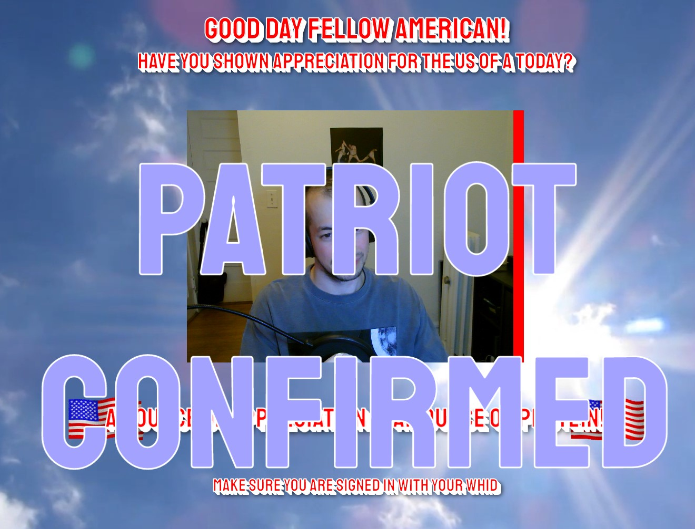
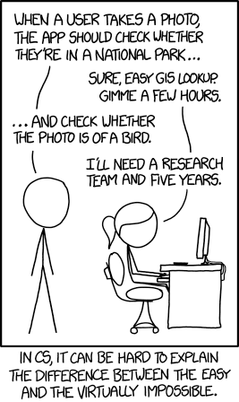
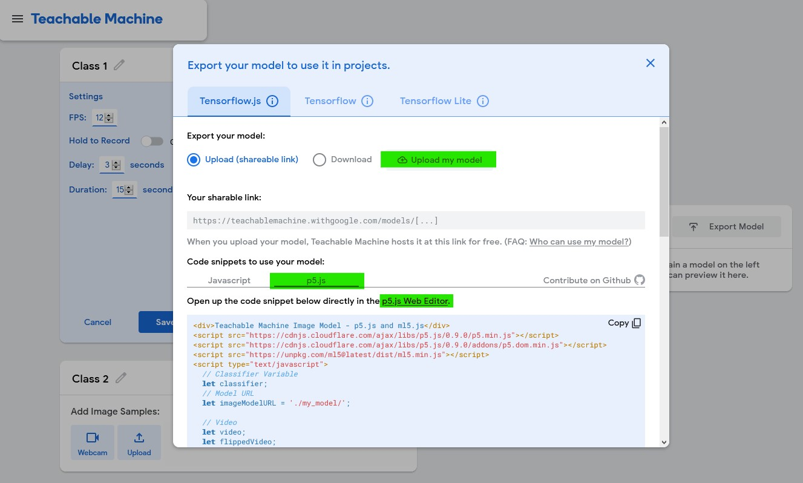
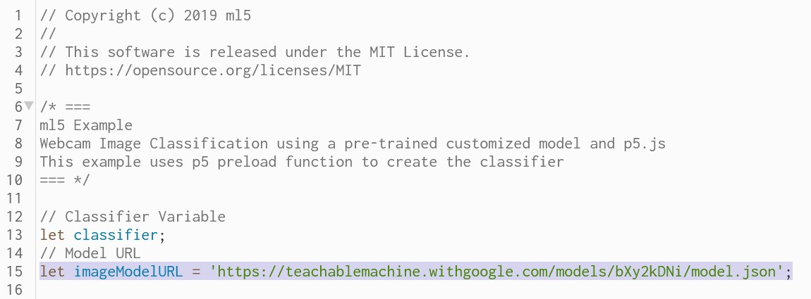

Doug Rosman
self-contained

Patriot Coin (work in progress)

What is Artificial Intelligence?
What is Machine Learning?
AI AT THE INTERSECTION OF ART AND TECHNOLOGY?
GAN Experiments

Additional Resources
RunwayML - Machine Learning for Creators - Experiment with a lots of different machine learning models.
Artificial Images YouTube Channel - A one-stop-shop for artists wanting to learn how to train their own GANs (for free!)
Teachable Machine Demo
This demo should you get you up and running with an interactive p5.js sketch that uses a Machine Learning-based image recognition model that we'll train from scratch* using Google's Teachable Machine!
If you're creating a sketch outside of the p5.js web editor, you'll need to download the p5.js and ml5.js libraries and put them in a folder next to your sketch.js file. The template p5.js code provided by Teachable Machine requires an older version of p5.js and ml5.js. The links here will download those older versions.
Part 1: Training your model in Teachable Machine
- Go to teachablemachine.withgoogle.com and click 'Get Started'
- Select 'Image Project'
- Train your image model! Create and name as many classes as you'll need for your model.
- Change your settings for image recording by pressing Webcam, and the gear icon.
- Set your FPS to 15 or lower: Even though your webcam likely records at 30fps, you don't want all those images. At that high framerate, all your images tend to look very similar, which doesn't increase your data set's variety.
- Turn off 'Hold to Record': Turning this off frees up your hands during recording. Sometimes leaving this on can be useful.
- Give yourself a delay
- Set your duration to at least 10 seconds: You want at least 100 images per class, so set the duration to something that'll make sure you get enough images.
- Record or upload images to each class. There's a whole lot to be said about what makes a "good" data set. But here are some general tips:
- Quantity > Quality: In general, 500 "okay" images will be better than 50 "good" images. There's no right number for how many images you should have per class, but you should have at least 100 images per class.
- Variety is the spice of a well-composed data set: Make sure to capture a wide variety of images for each class by altering your capture conditions. Change your lighting, move the object toward and away from the camera, position the object at different angles, record different versions of the same object (for example, if you're teaching a machine to recognize a dog, you should probably include multiple dog breeds in your data set).
- Be aware of your context: Computers have a mind of their own, and will learn things you didn't mean for them to learn. For example, if you're trying to teach the machine how to recognize your drawings, keep in mind that it's paying just as much attention to the paper the drawing is on as much as the drawing itself.
- (MOST IMPORTANT) Be aware of bias!!: Continuing the point above, computers will learn things you didn't mean for them to learn. This can have harmful consequences. For example, if you're training your model to recognize a human face, will it perform equally for people with different skin tones? If your data set is composed of images of only one kind of person, then it will only perform with the most accuracy for that type of person. We usually don't have access to every type of person (or object, or whatever it is we're filling our data set with), so it's important to acknowledge that our image models are imperfect, and might not perform well for everyone. It's okay when we're just experimenting with artistic sketches in the comfort of our homes or classrooms, but these issues become much more important when we put these tools out into the world--where we can't be sure who will be interacting with them.
- Once you've recorded all the images you want for you class, click 'Train Model.' Make sure to leave your tab open while training. You can open a new window in your browser if you want to keep browsing.
- Once training completes, click 'Export Model'
- For convenience, click 'Upload my model.' Make sure to save the link that is generated once it is uploaded!
- Below where it says 'Code snippets', click 'p5.js', then click 'p5.js Web Editor' where it says 'Open up the code snippet below directly in the p5.js Web Editor. 
- In the p5 web editor, swap out the model link (line 15) with your own link. (Doug's pretrained hand-direction model:)
- Doug's p5.js demo sketches: Hand Direction 1, Hand Direction 2: Granular Confidence 
- Here's the template code for the Teachable Machine Image Recognition model. You can find this code here: ml5 Example Webcam Image Classification Before doing anything, try playing the sketch to make sure it works. You'll need to make sure your webcam isn't occupied by another program (like Zoom, or the other tab running Teachable Machine)
- There isn't much you have to do to customize this code to make use of the image recognition data! There are two pieces of information we can get from the classifier:
- Label: The label is the name of your class. results[0].label will return the label the classifier feels most confident about.
- Confidence: The confidence is how sure the classifier is about what it sees. This number ranges from 0-1, where 1 means 100% confidence in identifying the object.
- Let's take a look at the 'gotResult' function. This is where we can work with the data being returned by the classifier to control elements of our sketch. We can change some of the code to access the confidence and labels that we want.
- If you wanted to control certain actions with different labels and confidence values, you can use if-statements:
- You could also do something like use the confidence value to determine the size of the circle you're using to draw:
Bias in AI is one of the most important issues facing the proliferation of this technology. There is no such thing as a "neutral" AI, and the issue of bias in machine learning is something that can never be "solved" (though that doesn't mean we shouldn't do everything we can to understand it and work to remove it). Many companies that use machine learning in their product stack have (or weakly gestured toward having...) something like an AI ethics division, whose responsibility it is to make sure the AI tools they put out into the world are as ethical and unbiased as they possibly can be (within reason for them to remain profitable, anyway...spending time).
https://teachablemachine.withgoogle.com/models/mLR2k5Qif/model.json// Copyright (c) 2019 ml5
//
// This software is released under the MIT License.
// https://opensource.org/licenses/MIT
/* ===
ml5 Example
Webcam Image Classification using a pre-trained customized model and p5.js
This example uses p5 preload function to create the classifier
=== */
// Classifier Variable
let classifier;
// Model URL
let imageModelURL =
'https://teachablemachine.withgoogle.com/models/bXy2kDNi/model.json';
// Video
let video;
let flippedVideo;
// To store the classification
let label = "";
let confidence = 0; // Make sure to add this variable!
// Load the model first
function preload() {
classifier = ml5.imageClassifier(imageModelURL);
}
function setup() {
createCanvas(320, 260);
// Create the video
video = createCapture(VIDEO);
video.size(320, 240);
video.hide();
flippedVideo = ml5.flipImage(video)
// Start classifying
classifyVideo();
}
function draw() {
background(0);
// Draw the video
image(flippedVideo, 0, 0);
// Draw the label
fill(255);
textSize(16);
textAlign(CENTER);
text(label, width / 2, height - 4);
}
// Get a prediction for the current video frame
function classifyVideo() {
flippedVideo = ml5.flipImage(video)
classifier.classify(flippedVideo, gotResult);
}
// When we get a result
function gotResult(error, results) {
// If there is an error
if (error) {
console.error(error);
return;
}
// The results are in an array ordered by confidence.
// console.log(results[0]);
label = results[0].label;
confidence = results[0].confidence;
// make sure you added 'let confidence = 0' to the top of your code!
// Classifiy again!
classifyVideo();
}// When we get a result
function gotResult(error, results) {
// If there is an error
if (error) {
console.error(error);
return;
}
// The results are in an array ordered by confidence.
// console.log(results[0]);
label = results[0].label;
confidence = results[0].confidence;
// Classifiy again!
classifyVideo();
}
label = results[0].label;
confidence = results[0].confidence;
if (label == "Move Up") {
// move circle Up (decrease Y value)
} else if (label == "Move Right") {
// move circle Right (increase X value)
} else if (label == "Move Down") {
// move circle Down (increase Y value)
} else if (label == "Move Left") {
// move circle Left (decrease X value)
} else {
// do nothing
}
// Classifiy again!
classifyVideo(); confidence = results[0].confidence;
radius = map(confidence, 0, 1, 1, 100);
/* if you want to use radius, you would first have
to declare it at the top of your code */